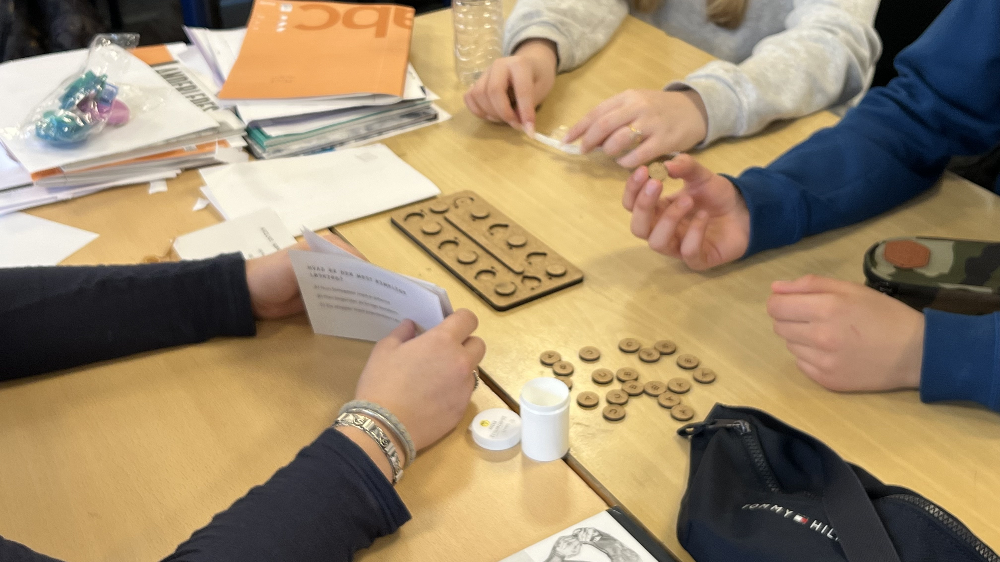
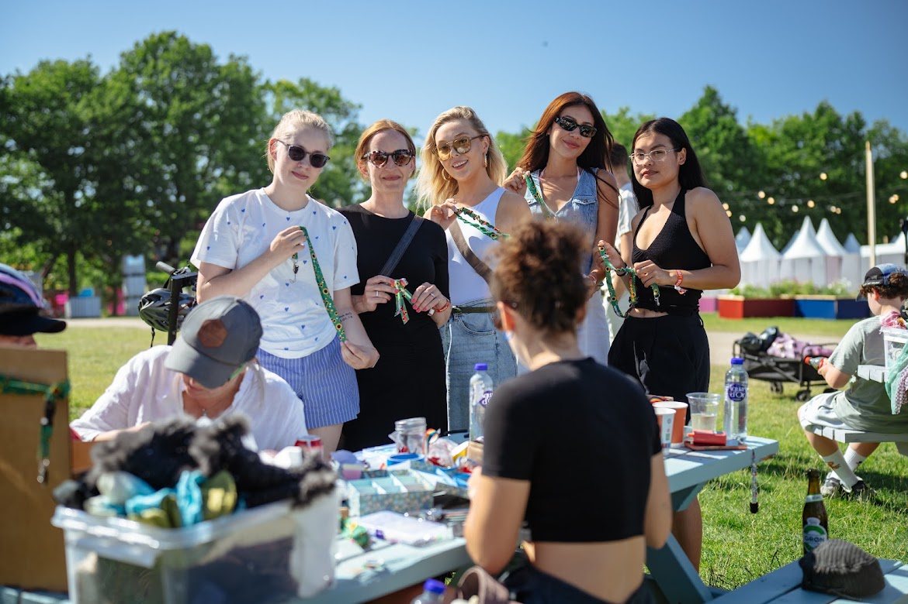

Selected Projects
8 projects
The Contraception Line
An interactive telephone installation exploring contraception, responsibility and sexual health through anonymous participation at Roskilde Festival.

UNIT 12:2 - The Future Consultation
A speculative robotic consultation that challenges assumptions about gender, contraception and reproductive responsibility.

Contraception & Responsibility Workshop
A facilitated research workshop with young people exploring contraceptive knowledge, gender roles and perceptions of responsibility.

Barnabókaklubbin
Exploring how robotic process automation can reduce repetitive administrative work while preserving human judgement and organisational knowledge.

Jellyfish
A sensory light installation creating a calm and meditative pause within the intensity of the festival environment.

The Sunflower Lanyard - Staring Right Back
Investigating how the Sunflower Lanyard for invisible disabilities is interpreted in public space - and how visibility can both support and stigmatise.

Sunflower Lanyard Workshop
A co-creative workshop inviting participants to personalise the Sunflower Lanyard and explore identity, visibility and ownership through making.

Viking Ship Museum App
A playful mobile museum experience combining QR-code interaction, storytelling and historical learning through an interactive treasure hunt.